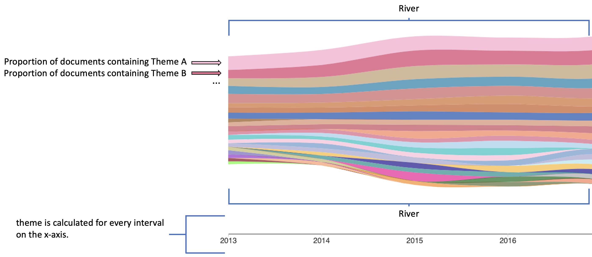
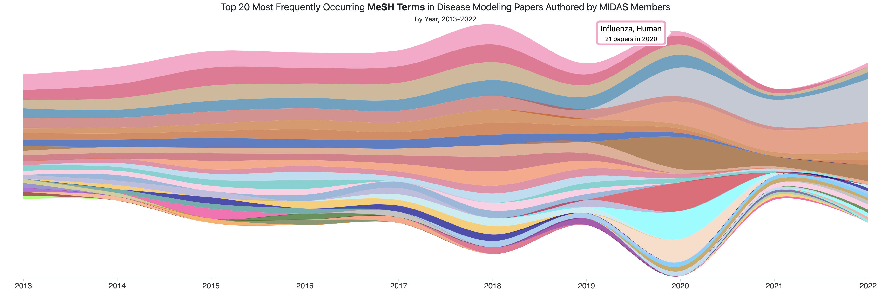
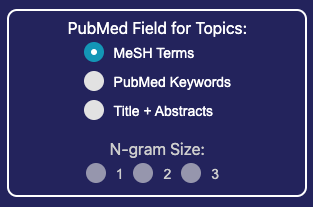
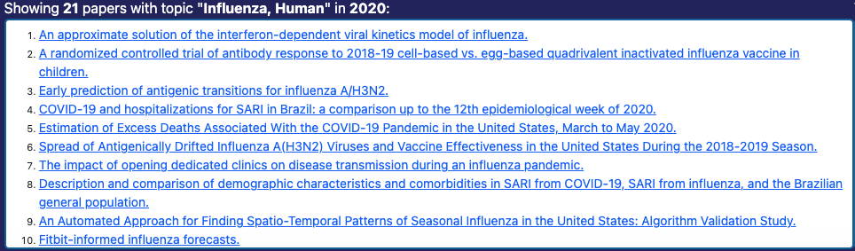
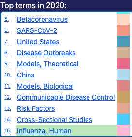

A Theme River is a visualization of thematic variations over time in a set of documents. Documents are grouped into themes based on the terms they contain.
In a Theme River visualization, themes are represented as colored ribbons that flow from left to right. The x-axis represents time, and the y-axis represents the proportion of documents that contain a given theme at a given time. When individual themes are stacked on top of each other, the visualization resembles a river, hence the name.

To view the visualization, click on the Visualization tab above.
The MIDAS Theme River is an interactive display that allows users to explore the themes of MIDAS papers over time. Specifically, the display shows the 20 most frequently occurring topics in infectious disease papers authored by MIDAS members from 2013 to 2022.
The display is composed of four parts:

- Hovering over a theme shows a tooltip with the theme name and the number of papers containing the theme in that year. The year is determined by the mouses position over the x-axis.
- Clicking on a theme displays a list of papers that contain the theme in the year.

- Field - The PubMed metadata field to use for theme extraction.
- N-gram Size - The size of the n-grams to use for theme extraction. For example, a value of 2 will extract bigrams (two-word phrases).

- Hovering over a paper displays the paper title and abstract.
- Clicking a paper takes you to the paper on midasnetwork.us.

- Clicking on a theme name will flash the theme in the visualization for a few seconds, and load the papers for that theme in the Papers section.
Absract: